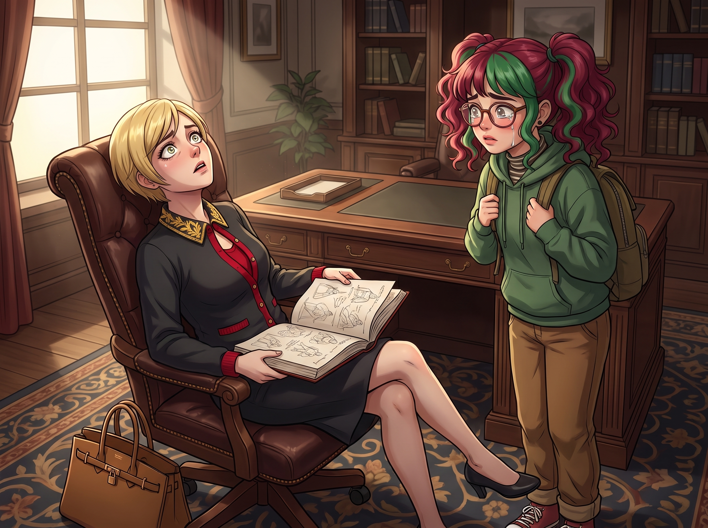
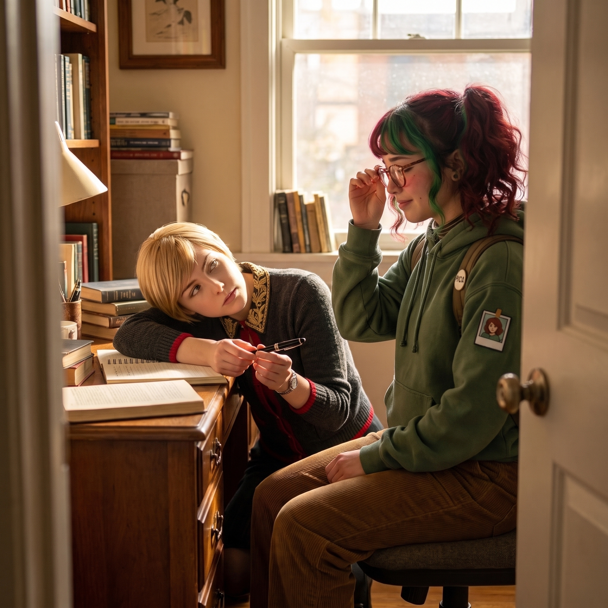

孫子兵法西雅圖行政黑魔法註疏版


在 Victoria 那個佔據了整整一面牆、按顏色和年代嚴格分類的奢華書櫃裡，有一本格外顯眼的藏書——一本用上等絲綢裝幀、據傳是清代手抄本的《孫子兵法》。
這本書平時只是 Victoria 用來向其他老錢家族和商業對手彰顯自己不僅有財力、更有東方戰略底蘊的裝飾品。名媛本人其實只看過封皮。
直到一個陰雨綿綿的週二下午，Victoria 提著剛買的柏金包回到畫廊，看到了讓她心肺驟停的一幕。
一、名媛的震怒與文物破壞
實習生 Lily 正坐在 Victoria 那張價值兩萬美金的黃花梨木書桌前，手裡捧著那本清代手抄本的《孫子兵法》。更可怕的是，Lily 正在用一支鋼筆，在一張張半透明的檔案級硫酸紙上寫著什麼，然後將它們小心翼翼地夾進這本古籍的書頁裡！
「Lily！！妳在對我的古董做什麼？！」
Victoria 尖叫著踩著高跟鞋衝了過去，一把奪過古籍。名媛氣得渾身發抖：「這可是十八世紀的真品！在蘇富比拍賣會上花了我六萬美金！妳那充滿了平民碳水化合物的手指怎麼敢碰它？妳寫的這些像中學生讀書心得一樣的垃圾是什麼？！」
Lily 像一隻受驚的兔子一樣站了起來，雙手慌亂地絞在身前，大眼睛裡瞬間蓄滿了眼淚。
「對、對不起，Victoria 學姐！」Lily 的聲音軟糯且充滿了愧疚，「我今天打掃書櫃時，不小心翻開了這本書。我發現孫武將軍的戰略思想雖然深邃，但缺乏對現代官僚體制與資本市場的向下相容性。所以……我沒忍住，用無酸硫酸紙給它加了一點點現代實踐註解。我絕對沒有弄壞原稿！」
「妳給孫子兵法寫註解？！」Victoria 氣極反笑，她伸出戴著法式美甲的手指，嫌棄地捏起一張夾在書頁裡的硫酸紙，「妳以為妳是誰？諸葛亮嗎？還是華爾街的對沖基金經理？讓我看看妳寫了什麼狗屁不通的……」
Victoria 的聲音戛然而止。
她的目光落在硫酸紙上那行娟秀、整齊、卻透著一股令人毛骨悚然的寒意的字跡上。
二、千古缺失的黑魔法註解
硫酸紙對應的原句是：《孫子兵法·謀攻篇》——「不戰而屈人之兵，善之善者也。」
而 Lily 在下面寫的註解是：
【Lily 的現代行政釋義】
物理毀滅（如 Price 學姐的管鉗）乃下乘之作。現代商戰之「不戰而屈人之兵」，其核心在於「合法地提高對方的合規成本」。【實踐案例】當敵對畫廊企圖惡意挖角我們的藝術家時，不應與之正面競價。應向稅務局匿名舉報其海外帳戶，並同步向環保署發送 120 頁的資訊自由法案申請，要求徹查其新展館的甲醛排放標準。利用行政機關的調查程序，凍結其三個月的現金流。敵方不攻自破。
Victoria 的瞳孔瞬間放大。她猛地翻到了下一頁。
原句：《孫子兵法·計篇》——「兵者，詭道也。故能而示之不能，用而示之不用。」
【Lily 的現代行政釋義】
此即「合規的資訊不對稱」。【實踐案例】在發送警告信件給難纏的供應商時，利用郵件系統的特性：將法務部放在副本抄送欄位以示威懾，但將勞工檢查局、衛生署與反壟斷調查委員會放在密件隱藏抄送欄位。敵人以為自己面臨的只是普通的民事糾紛（能而示之不能），實則已經一腳踏進了行政調查的絞肉機。
Victoria 的呼吸開始變得急促。她像個貪婪的淘金者一樣，瘋狂地往後翻閱。
原句：《孫子兵法·軍爭篇》——「其疾如風，其徐如林，侵掠如火，不動如山。」
【Lily 的現代行政釋義】
此乃二號車廂小分隊的完美寫照。【疾如風】：指 Price 學姐開皮卡逃離現場的速度。
【徐如林】：指 Max 學姐發動時間倒流時，周圍靜止的時空。
【侵掠如火】：指 Victoria 學姐用資本併購敵人時的殘酷無情。
【不動如山】：指 Kate 學姐。任何敵意的攻擊，在 Kate 學姐溫柔的微笑和一盤剛烤好的肉桂捲面前，都會被絕對的道德結界化解為虛無。真正的最高防禦。
三、資本女王的徹底膜拜
「啪嗒。」
Victoria 手裡的柏金包掉在了地毯上。
她慢慢地拉開那張昂貴的辦公椅，雙腿發軟地坐了下來。她沒有再看 Lily 一眼，而是像捧著某種神聖的啟示錄一樣，雙手微微顫抖著捧起那本夾滿了硫酸紙的《孫子兵法》。
「Victoria 學姐……」Lily 小心翼翼地湊上前，眼裡還閃著淚光，「如果您覺得我污染了古籍，我現在就把這些紙抽出來扔掉……」
「別動！」
Victoria 猛地抬起頭，發出了一聲近乎護食的低吼。
她看著 Lily，那種傲慢、嫌棄的眼神已經徹底消失了。取而代之的，是一種面對達文西、愛因斯坦或是某種超越人類智慧的究極怪物的狂熱與敬畏。
「扔掉？這怎麼能扔掉？！」Victoria 激動得聲音都在發抖，「孫武懂個屁的現代商戰！他只知道怎麼在泥地裡砍人！Lily，妳這本《孫子兵法·西雅圖行政黑魔法註疏版》，一旦流傳到華爾街，足以讓高盛和摩根士丹利的那些老頭子把妳當成活神仙供起來！」
Victoria 一把抓住 Lily 的手，眼神狂熱：「Lily，第七篇《軍爭篇》妳寫完了嗎？關於『以迂為直』那一段，妳有沒有考慮過如何利用非政府組織的環保抗議來阻斷競爭對手的物流鏈？快！拿筆來！我們現在就把它補齊！」
四、吃瓜群眾的震撼
這時，剛好從外面回來的 Chloe 和 Max 走到書房門口，看到了這令人毛骨悚然的一幕。
曾經眼高於頂、認為全世界除了自己都是白痴的 Victoria Chase，此刻正毫無形象地趴在書桌上。她甚至親自給實習生拉開椅子，恭敬地雙手遞上一支萬寶龍鋼筆，眼神裡充滿了對知識的飢渴：「Lily 大師，請您務必詳細解釋一下，如何運用歐盟一般資料保護規則作為『火攻』的現代替代品，來焚燒歐洲競爭對手的數據庫？」
而 Lily 則乖巧地坐在那裡，推了推圓框眼鏡，語氣溫柔如水：「好的，Victoria 學姐。其實這非常簡單，就跟 Kate 學姐教我烤餅乾時控制溫度一樣，我們只需要精準控制投訴信的發送頻率……」
Chloe 僵硬地轉過頭，看著 Max。
「Max，」Chloe 嚥了一口口水，「大富婆瘋了。她正在稱呼我們的實習生為『大師』。」
Max 默默地舉起相機，將這個資本家向黑魔法實習生低頭求學的歷史性畫面拍了下來。
「不，Chloe，」Max 絕望地嘆了口氣，彷彿看到了世界末日的倒數計時，「Victoria 沒瘋。她只是終於意識到，在這個名為 Lily 的終極兵器面前，她的錢和我們的超能力，都只是冷兵器時代的弓箭。而 Lily，是那顆裝載了核彈頭的洲際導彈。」
這時，Kate 端著一壺剛泡好的洋甘菊茶走了進來，看著書房裡和諧探討如何合法毀滅競爭對手的兩人，露出了欣慰的笑容。
「大家都在用功讀書呢，真好。」Kate 溫柔地把茶壺放下，「Lily，給 Victoria 講完課之後，記得來幫我把烤箱裡的餅乾拿出來哦。」
「好的，Kate 學姐！我馬上就去！」Lily 乖巧地回應。
Max 看著這條荒謬的食物鏈，徹底放棄了思考。在二號車廂裡，古老的東方兵法終於完成了它的最終進化，而這一切的掌控者，依然是那個每天按時烤餅乾的天使。